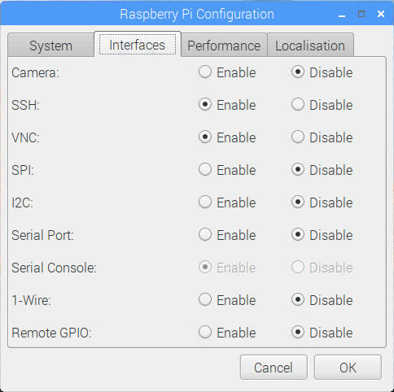

如何在 Raspberry Pi 上启用 SSH
Secure Shell(SSH) 是一种加密网络协议，用于客户端和服务器之间的安全连接。在最新版本的 Raspbian 中，默认情况下禁用 SSH 访问，但可以轻松启用它。
在本教程中，我们将向您展示如何在 Raspberry Pi 面板上启用 SSH 。启用S SH 将允许您远程连接到 Pi 并执行管理任务或传输文件。
我们假设您在 Raspberry Pi 上安装了 Raspbian 。
在没有屏幕的情况下在 Raspberry Pi 上启用 SSH
如果您没有备用的 HDMI 显示器或键盘来连接 Raspberry Pi ，您可以通过将名为 ssh ( 没有任何扩展名 ) 的空文件放入启动分区来轻松启用 SSH 。
要在 Raspberry Pi 上启用 SSH ，请执行以下步骤：
- 关闭 Raspberry Pi 并取出 SD 卡。
- 将 SD 卡插入计算机的读卡器。 SD 卡将自动安装。
- 使用 OS 文件管理器导航到 SD 卡启动目录。 Linux 和 macOS 用户也可以从命令行执行此操作。
- 在引导目录中创建一个名为 ssh 的新空文件，不带任何扩展名。
- 从计算机中取出 SD 卡并将其放入 Raspberry Pi 中。
- 打开 Pi 板电源。在启动时， Pi 将检查此文件是否存在，如果存在，将启用 SSH 并删除该文件。
就这样。一旦 Raspberry Pi 启动，您可以通过 SSH 进入它。
在 Raspberry Pi 上启用 SSH
如果您将一台 HDMI 监视器插入 Raspberry Pi ，您可以从桌面 GUI 或终端手动启用 SSH 。
从 GUI 启用 SSH
如果您更喜欢命令行上的 GUI ，请执行以下步骤：
- 从 “Preferences” 菜单中打开 “Raspberry Pi Configuration” 窗口。
- 单击 “Interfaces” 选项卡。
选择 SSH 行旁边的 “Enable” 。

单击“确定”按钮以使更改生效。
从终端启用 SSH
使用
Ctrl+Alt+T键盘快捷键或单击终端图标打开终端，然后键入以下命令raspi-config启动该工具。使用向上键或向下键导航至 “Interfacing Options” ，然后按
Enter。导航到 “SSH” 并按
Enter。系统将提示您是否要启用 SSH 服务器。选择 “Yes” ，然后按
Enter。下一个窗口将通知您 SSH 服务器已启用。按
Enter顶部返回主菜单，然后选择 “Finish” 以关闭 raspi-config 对话框。
或者，您可以使用以下命令 systemctl 启动并启用 ssh 服务，而不是使用 raspi-config 工具：
sudo systemctl enable ssh
sudo systemctl start ssh通过 SSH 连接 Raspberry Pi
要通过 SSH 连接到 Pi ，您需要知道您的 Raspberry Pi 的 IP 地址。如果您在没有屏幕的情况下运行 Pi ，则可以在路由器的 DHCP 租约表中找到 IP 地址。否则，如果已插入监视器，请使用 ip 命令确定板 IP 地址：
ip a找到 IP 地址后，您可以从计算机连接到 Raspberry Pi 。 Windows 用户可以使用 PuTTY 等 SSH 客户端。
Linux 和 macOS 用户默认安装了 SSH 客户端，可以输入以下命令通过 SSH 连接到 Pi ：
ssh pi@pi_ip_address使用 Raspberry Pi 的 IP 地址更改上面命令中的 pi_ip_address 。如果您尚未更改 “pi” 用户密码，则默认密码为 raspberry 。
当您第一次通过 SSH 连接时，系统将提示您接受 RSA 密钥指纹，输入 “Yes” 继续。
一旦您登录 Raspberry Pi ，您将收到类似下面的消息。
Linux raspberrypi 4.14.98-v7+ #1200 SMP Tue Feb 12 20:27:48 GMT 2019 armv7l
The programs included with the Debian GNU/Linux system are free software;
the exact distribution terms for each program are described in the
individual files in /usr/share/doc/*/copyright.
...如果您将 Pi 暴露给 Internet ，最好实施一些安全措施。默认情况下， SSH 侦听端口 22. 更改默认 SSH 端口可以降低自动攻击的风险，从而为计算机增加额外的安全保护。您还可以设置基于 SSH 密钥的身份验证并在不输入密码的情况下进行连接。
结论
您已经学习了如何在 Raspberry Pi 上启用 SSH 。您现在可以通过命令提示符登录到您的面板执行常见的系统管理任务。 Linux 和 macOS 用户可以通过在 SSH 配置文件中定义所有 SSH 连接来简化其工作流程。